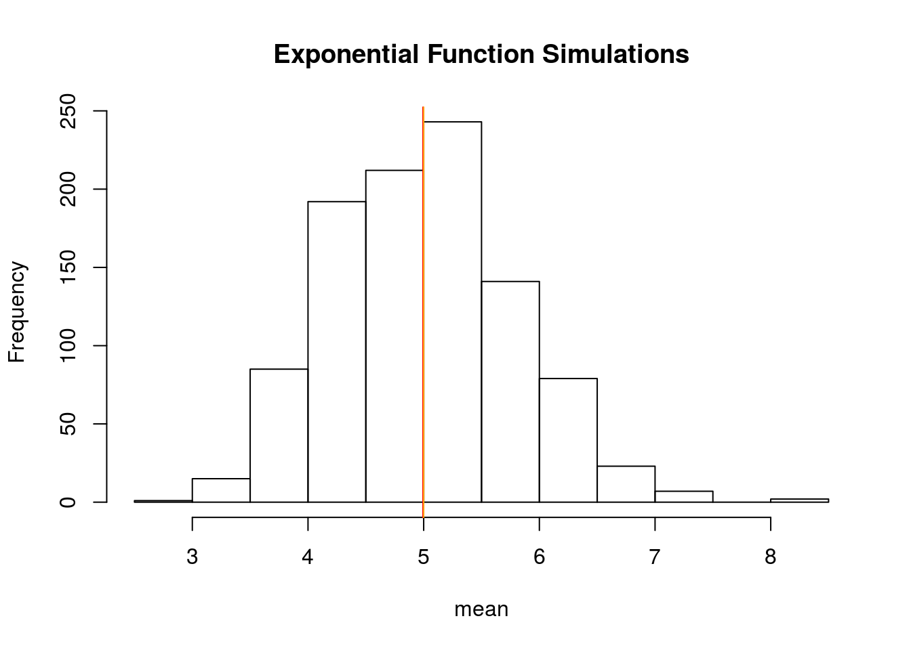
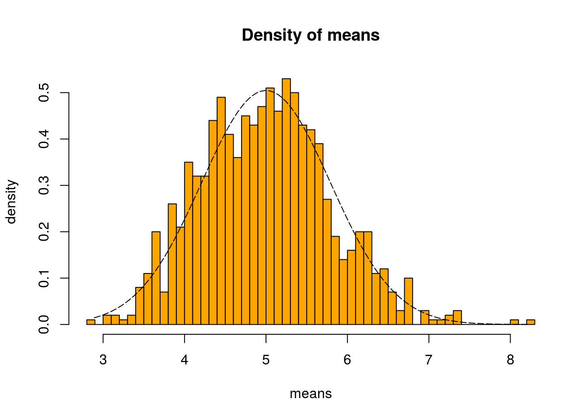
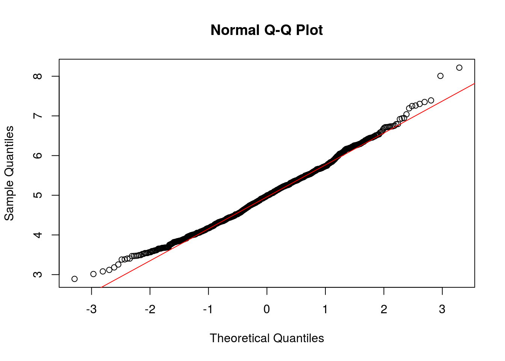
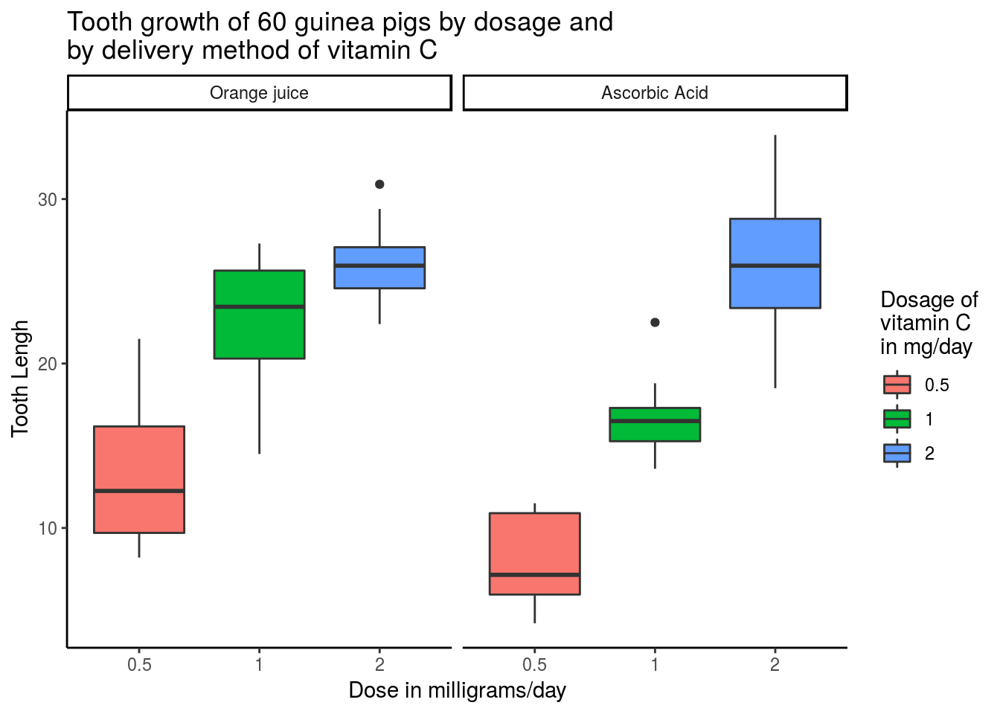

The analysis consists of two parts:
- A simulation exercise.
- Basic inferential data analysis.
Analysis
1. A simulation exercise.
In this analysis I’ll investigate the exponential distribution in R and compare it with the Central Limit Theorem. The exponential distribution can be simulated in R with rexp(n, lambda) where lambda is the rate parameter. The mean of exponential distribution is 1/lambda and the standard deviation is also 1/lambda. Set lambda = 0.2 for all of the simulations. I’ll investigate the distribution of averages of 40 exponentials. Note that you will need to do a thousand simulations.
Illustrate via simulation and associated explanatory text the properties of the distribution of the mean of 40 exponentials. You should
- Show the sample mean and compare it to the theoretical mean of the distribution.
- Show how variable the sample is (via variance) and compare it to the theoretical variance of the distribution.
- Show that the distribution is approximately normal.
Task
# set seed for reproducability
set.seed(31)
# set lambda to 0.2
lambda <- 0.2
# 40 samples
n <- 40
# 1000 simulations
simulations <- 1000
# simulate
simulated_exponentials <- replicate(simulations, rexp(n, lambda))
# calculate mean of exponentials
means_exponentials <- apply(simulated_exponentials, 2, mean)Question 1
Show where the distribution is centered at and compare it to the theoretical center of the distribution.
analytical_mean <- mean(means_exponentials)
analytical_mean[1] 4.993867# analytical mean
theory_mean <- 1/lambda
theory_mean[1] 5# visualization
hist(means_exponentials, xlab = "mean", main = "Exponential Function Simulations")
abline(v = analytical_mean, col = "red")
abline(v = theory_mean, col = "orange")
The analytics mean is 4.993867 the theoretical mean 5. The center of distribution of averages of 40 exponentials is very close to the theoretical center of the distribution.
Question 2
Show how variable it is and compare it to the theoretical variance of the distribution..
# standard deviation of distribution
standard_deviation_dist <- sd(means_exponentials)
standard_deviation_dist[1] 0.7931608# standard deviation from analytical expression
standard_deviation_theory <- (1/lambda)/sqrt(n)
standard_deviation_theory[1] 0.7905694# variance of distribution
variance_dist <- standard_deviation_dist^2
variance_dist[1] 0.6291041# variance from analytical expression
variance_theory <- ((1/lambda)*(1/sqrt(n)))^2
variance_theory[1] 0.625Standard Deviation of the distribution is 0.7931608 with the theoretical SD calculated as 0.7905694. The Theoretical variance is calculated as ((1 / ??) * (1/???n))2 = 0.625. The actual variance of the distribution is 0.6291041
Question 3
Show that the distribution is approximately normal.
xfit <- seq(min(means_exponentials), max(means_exponentials), length=100)
yfit <- dnorm(xfit, mean=1/lambda, sd=(1/lambda/sqrt(n)))
hist(means_exponentials,breaks=n,prob=T,col="orange",xlab = "means",main="Density of means",ylab="density")
lines(xfit, yfit, pch=22, col="black", lty=5)
# compare the distribution of averages of 40 exponentials to a normal distribution
qqnorm(means_exponentials)
qqline(means_exponentials, col = 2)
Due to Due to the central limit theorem (CLT), the distribution of averages of 40 exponentials is very close to a normal distribution.
2. Basic inferential data analysis.
Now in the second portion of this analysis, we’re going to analyze the ToothGrowth data in the R datasets package.
- Load the ToothGrowth data and perform some basic exploratory data analyses
- Provide a basic summary of the data.
- Use confidence intervals and/or hypothesis tests to compare tooth growth by supp and dose. (Only use the techniques from class, even if there’s other approaches worth considering)
- State your conclusions and the assumptions needed for your conclusions.
Load the ToothGrowth data and perform some basic exploratory data analyses
# load the data ToothGrowth
data(ToothGrowth)
# preview the structure of the data
str(ToothGrowth)'data.frame': 60 obs. of 3 variables:
$ len : num 4.2 11.5 7.3 5.8 6.4 10 11.2 11.2 5.2 7 ...
$ supp: Factor w/ 2 levels "OJ","VC": 2 2 2 2 2 2 2 2 2 2 ...
$ dose: num 0.5 0.5 0.5 0.5 0.5 0.5 0.5 0.5 0.5 0.5 ...# preview first 5 rows of the data
head(ToothGrowth, 5) len supp dose
1 4.2 VC 0.5
2 11.5 VC 0.5
3 7.3 VC 0.5
4 5.8 VC 0.5
5 6.4 VC 0.5Provide a basic summary of the data.
# data summary
summary(ToothGrowth) len supp dose
Min. : 4.20 OJ:30 Min. :0.500
1st Qu.:13.07 VC:30 1st Qu.:0.500
Median :19.25 Median :1.000
Mean :18.81 Mean :1.167
3rd Qu.:25.27 3rd Qu.:2.000
Max. :33.90 Max. :2.000 # compare means of the different delivery methods
tapply(ToothGrowth$len,ToothGrowth$supp, mean) OJ VC
20.66333 16.96333 # plot data graphically
ggplot(ToothGrowth, aes(factor(dose), len, fill = factor(dose))) +
geom_boxplot() +
# facet_grid(.~supp)+
facet_grid(.~supp, labeller = as_labeller(
c("OJ" = "Orange juice",
"VC" = "Ascorbic Acid"))) +
labs(title = "Tooth growth of 60 guinea pigs by dosage and\nby delivery method of vitamin C",
x = "Dose in milligrams/day",
y = "Tooth Lengh") +
scale_fill_discrete(name = "Dosage of\nvitamin C\nin mg/day") +
theme_classic()
Use confidence intervals and/or hypothesis tests to compare tooth growth by supp and dose.
# comparison by delivery method for the same dosage
t05 <- t.test(len ~ supp,
data = rbind(ToothGrowth[(ToothGrowth$dose == 0.5) &
(ToothGrowth$supp == "OJ"),],
ToothGrowth[(ToothGrowth$dose == 0.5) &
(ToothGrowth$supp == "VC"),]),
var.equal = FALSE)
t1 <- t.test(len ~ supp,
data = rbind(ToothGrowth[(ToothGrowth$dose == 1) &
(ToothGrowth$supp == "OJ"),],
ToothGrowth[(ToothGrowth$dose == 1) &
(ToothGrowth$supp == "VC"),]),
var.equal = FALSE)
t2 <- t.test(len ~ supp,
data = rbind(ToothGrowth[(ToothGrowth$dose == 2) &
(ToothGrowth$supp == "OJ"),],
ToothGrowth[(ToothGrowth$dose == 2) &
(ToothGrowth$supp == "VC"),]),
var.equal = FALSE)
# summary of the conducted t.tests, which compare the delivery methods by dosage,
# take p-values and CI
summaryBYsupp <- data.frame(
"p-value" = c(t05$p.value, t1$p.value, t2$p.value),
"Conf.Low" = c(t05$conf.int[1],t1$conf.int[1], t2$conf.int[1]),
"Conf.High" = c(t05$conf.int[2],t1$conf.int[2], t2$conf.int[2]),
row.names = c("Dosage .05","Dosage 1","Dosage 2"))
# show data table
summaryBYsupp p.value Conf.Low Conf.High
Dosage .05 0.006358607 1.719057 8.780943
Dosage 1 0.001038376 2.802148 9.057852
Dosage 2 0.963851589 -3.798070 3.638070Conclusion
With 95% confidence we reject the null hypothesis, stating that there is no difference in the tooth growth by the delivery method for .5 and 1 milligrams/day. We observe p-values less than the treshold of .05 and the confidence levels don’t include 0. So, for dosage of .5 milligrams/day and 1 milligrams/day does matter the delivery method. With 95% confidence we fail to reject the null hypothesis, stating that there is no difference in the tooth growth by the delivery method for 2 milligrams/day. We observe p-values more than the treshold of .05 and the confidence levels include 0. So, for dosage of 2 milligrams/day the delivery method doesn’t matter.
)